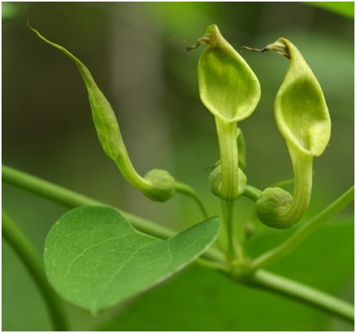
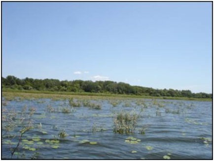

13. Памятник природы «залив Вертопрашиха»
Залив Вертопрашиха находится в устье р. Вертопрашиха, впадающей в р. Амур в 2 км ниже с. Нижнеленинское. Залив имеет длину 2 км и ширину в средней части до 800 м, а в устье до 200 м. По берегам залива произрастает долинный широколиственный лес. В древесном ярусе отмечены: дуб монгольский, клен мелколистный, ильм японский, боярышник перистонадрезанный, яблоня ягодная, черемуха обыкновенная, береза даурская, сирень амурская. В кустарниковом ярусе - жимолость Рупрехта, акантопанакс сидячецветковый. Последний вид для ЕАО является очень редким, включен в Красную книгу ЕАО и встречается лишь по побережью р. Амур. В данном сообществе широко представлен виноград амурский, декоративно оплетающий деревья и кустарники. Для охраны нами предлагается левый берег залива длиной до 2 км и шириной до 200 м, т. к. именно здесь произрастает самый ценный в научном и эстетическом смысле вид - кирказон скрученный (Aristolochia contorta Bunge), относящийся к семейству Кирказоновые.
Кирказон скрученный представляет собой травянистую лиану длиной до 3 м с декоративными листьями размером до 12 см и зелено-желтыми цветками трубчатой формы до 3 см длины. На месте цветов образуются плоды-коробочки размером до 5 см. Данный вид включен в сводку редких видов растений российского Дальнего Востока и нуждается в охране на территории ЕАО, подлежит внесению в Красную книгу ЕАО как редкий декоративный вид на северной границе ареала.

кирказон скрученный (Aristolochia contorta Bunge)
